용접기능사 (2011-04-17 기출문제)
1과목: 용접일반
1. CO2용접 결함 중 기공의 방지 대책에 관한 설명으로 틀린 것은?
- 오염, 녹, 페인트 등을 제거한다.
- 산소의 압력을 높인다.
- 순도가 높은 CO2가스를 사용한다.
- 노즐에 부착되어 있는 스패터를 제거한 후 용접한다.
(정답률: 70%)

2. 변형 교정 방법 중 외력만으로 소성 변형을 일으키게 하여 변형을 교정하는 방법은?
- 박판에 대한 점 수축법
- 형재에 대한 직선 수축법
- 가열 후 해머링하는 방법
- 롤러에 거는 방법
(정답률: 48%)
3. 다음 중 침투 탐상 검사의 장점이 아닌 것은?
- 시험 방법이 간단하다.
- 제품의 크기, 형상 등에 크게 구애를 받지 않는다.
- 검사원의 경험과 지식에 따라 크게 좌우된다.
- 미세한 균열도 탐상이 가능하다.
(정답률: 76%)
4. 연강용 피복 금속 아크 용접봉의 작업성 중 직접 작업성이 아닌 것은?
- 아크 상태
- 용접봉 용융 상태
- 부착 슬래그의 박리성
- 스패터
(정답률: 57%)
5. 아크 용접의 재해라 볼 수 없는 것은?
- 아크 광선에 의한 전안염
- 스패터 비산으로 인한 화상
- 역화로 인한 화재
- 전격에 의한 감전
(정답률: 76%)
6. 형틀 굽힘(굴곡) 시험을 할 때 시험편을 보통 몇 도까지 굽히는가?
- 120°
- 180°
- 240°
- 300°
(정답률: 65%)
7. TIG 용접으로 스테인리스강을 용접하려고 한다. 가장 적합한 전원 극성으로 맞는 것은?
- 교류 전원
- 직류 역극성
- 직류 정극성
- 고주파 교류 전원
(정답률: 51%)
8. 피복 아크 용접에서 용접의 단위 길이 1cm 당 발생하는 전기적 열에너지 H(J/cm)를 구하는 식은?
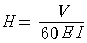
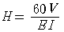
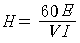
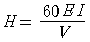
(정답률: 61%)
9. CO2가스 아크 용접에서 용접 전류를 높게 할 때의 사항을 열거한 것 중 옳은 것은?
- 용착율과 용입이 감소한다.
- 와이어의 녹아내림이 빨라진다.
- 용접 입열이 작아진다.
- 와이어 송급 속도가 늦어진다.
(정답률: 80%)
10. 용접용 로봇 설치 장소에 관한 설명으로 틀린 것은?
- 로봇 팔을 최소로 줄인 경로 장소를 선택한다.
- 로봇 움직임이 충분히 보이는 장소를 선택한다.
- 로봇 케이블 등이 사람 발에 걸리지 않도록 설치한다.
- 로봇 팔이 제어판넬, 조작 판넬 등에 닿지 않는 장소를 선택한다.
(정답률: 76%)
11. TIG 용접에서 직류 정극성으로 용접할 때 전극 선단의 각도가 가장 적합한 것은?
- 5 ~ 10˚
- 10 ~ 20˚
- 20 ~ 50˚
- 60 ~ 70˚
(정답률: 55%)
12. 각 층마다 전체 길이를 용접하면서 쌓아 올리는 방법으로서 이종 금속 등에 의하여 새로운 기계적 성질을 얻고자 할 때 이용되는 것은?
- 맞대기 용접
- 필릿 용접
- 플러그 용접
- 덧살 올림 용접
(정답률: 87%)
13. 이산화탄소 가스 아크 용접에서 CO2가스가 인체에 미치는 영향 중 위험한 상태가 되는 CO2(체적 %량)량은?
- 0.1 이상
- 3 이상
- 8 이상
- 15 이상
(정답률: 68%)
14. 납땜의 가열 방법에서 가열원으로 사용하는 것이 아닌 것은?
- 가스
- 저항열
- 고주파 전류
- 감마선
(정답률: 68%)
15. 다음 중 불연성 물질이 아닌 것은?
- 일산화탄소(CO)
- 이산화탄소(CO2)
- 질소(N)
- 네온(Ne)
(정답률: 39%)
16. 전기 저항용접에 속하지 않는 것은?
- 테르밋 용접
- 점 용접
- 프로젝션 용접
- 심 용접
(정답률: 70%)
17. 연강의 인장 시험에서 하중 100N, 시험편의 최초 단면적이 20㎟ 일 때 응력은 몇 N/㎟인가?
- 5
- 10
- 15
- 20
(정답률: 77%)
18. 탄산 가스를 이용한 용극식 용접에서 용강 중에 산화철(FeO)을 감소시켜 기포를 방지하기 위해 와이어에 첨가 하는 원소는?
- C, Na
- Si, Mn
- Mg, Ca
- S, P
(정답률: 55%)
19. 불활성 가스 금속 아크 용접에서 가스 공급 계통의 확인 순서로 가장 적합한 것은?
- 용기→감압 밸브→유량계→제어 장치→용접 토치
- 용기→유량계→감압 밸브→제어 장치→용접 토치
- 감압 밸브→용기→유량계→제어 장치→용접 토치
- 용기→제어 장치→감압 밸브→유량계→용접 토치
(정답률: 69%)
20. 다음 중 특히 두꺼운 판을 맞대기 용접에 의한 충분한 용입을 얻으려고 할 때 가장 적합한 홈의 형상은?
- H 형
- V 형
- K 형
- I 형
(정답률: 61%)
21. 서브머지드 아크 용접기로 스테인리스강 용접, 덧살 붙임 용접, 조선의 대판계(大板繼) 용접할 때 사용하는 용접용 용제(flux)는?
- 용융형 용제
- 혼성형 용제
- 소결형 용제
- 혼합형 용제
(정답률: 45%)
22. 레일 및 선박의 프레임 등 비교적 큰 단면적을 가진 주조나 단조품의 맞대기 용접과 보수 용접에 용이한 용접은?
- 테르밋 용접
- MIG 용접
- TIG 용접
- 브레이징
(정답률: 64%)
23. 용접에 의한 이음을 리벳 이음과 비교했을 때 용접 이음의 장점이 아닌 것은?
- 이음 구조가 간단하다.
- 판 두께에 제한을 거의 받지 않는다.
- 용접 모재의 재질에 대한 영향이 작다.
- 기밀성과 수밀성을 얻을 수 있다.
(정답률: 63%)
24. 피복 배합제의 성분 중 탈산제로 사용되지 않는 것은?
- 규소철
- 망간철
- 알루미늄
- 유황
(정답률: 68%)
25. 아크 에어 가우징에 대한 설명으로 틀린 것은?
- 가스 가우징에 비해 2~3배 작업 능률이 좋다.
- 용접 현장에서 결함부 제거, 용접 홈의 준비 및 가공 등에 이용된다.
- 탄소강 등 철제품에만 사용한다.
- 탄소 아크 절단에 압축 공기를 같이 사용하는 방법이다.
(정답률: 70%)
26. 가스 용접에서 산소 용기 취급에 대한 설명이 잘못된 것은?
- 산소 용기 밸브, 조정기 등은 기름천으로 잘 닦는다.
- 산소 용기 운반 시에는 충격을 주어서는 안된다.
- 산소 밸브의 개폐는 천천히 해야 한다.
- 가스 누설의 점검은 비눗물로 한다.
(정답률: 85%)
27. 가스 용접봉 선택하는 공식으로 맞는 것은? (단, D : 용접봉 지름(mm), T : 판 두께(mm))
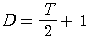
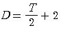
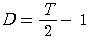
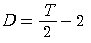
(정답률: 78%)
28. 교류 아크 용접기는 무부하 전압이 높아 전격의 위험이 있으므로 안전을 위하여 전격 방지기를 설치한다. 이 때 전격 방지기의 2차 무부하 전압은 몇 V 범위로 유지하는 것이 적당한가?
- 80 ~ 90 V 이하
- 60 ~ 70 V 이하
- 40 ~ 50 V 이하
- 20 ~ 30 V 이하
(정답률: 48%)
29. 가스 용접봉 선택의 조건에 맞지 않는 것은?
- 모재와 같은 재질일 것
- 불순물이 포함되어 있지 않을 것
- 용융 온도가 모재보다 낮을 것
- 기계적 성질에 나쁜 영향을 주지 않을 것
(정답률: 68%)
30. 가스 용접의 특징 설명으로 틀린 것은?
- 가열시 열량 조절이 비교적 자유롭다.
- 피복 금속 아크 용접에 비해 후판 용접에 적당하다.
- 전원 설비가 없는 곳에서도 쉽게 설치할 수 있다.
- 피복 금속 아크 용접에 비해 유해 광선의 발생이 비교적 적다.
(정답률: 57%)
31. 가스 절단 시 예열 불꽃이 강할 때 생기는 현상은?
- 절단면이 거칠어진다.
- 드래그가 증가한다.
- 절단 속도가 높아진다.
- 절단이 중단되기 쉽다.
(정답률: 51%)
32. 아크 용접기의 사용률에서 아크 시간과 휴식 시간을 합한 전체 시간은 몇 분을 기준으로 하는가?
- 60분
- 30분
- 10분
- 5분
(정답률: 65%)
33. 가스 절단의 예열 불꽃의 역할에 대한 설명으로 틀린 것은?
- 절단 산소 운동량 유지
- 절단 산소 순도 저하 방지
- 절단 개시 발화점 온도 가열
- 절단재의 표면 스케일 등의 박리성 저하
(정답률: 62%)
34. 전류 밀도가 클 때 가장 잘 나타나는 것으로 아크 전류가 일정할 때 아크 전압이 높아지면 용접봉의 용융 속도가 늦어지고 아크 전압이 낮아지면 용융 속도가 빨라지는 특성은?
- 부특성
- 절연 회복 특성
- 전압 회복 특성
- 아크 길이 자기 제어 특성
(정답률: 73%)
35. 침몰선의 해체나 교량의 개조 시 사용되는 수중 절단법에서 가장 많이 사용되는 연료 가스는?
- 아세톤
- 에틸렌
- 수소
- 질소
(정답률: 82%)
2과목: 용접재료
36. 산소에 대한 설명으로 틀린 것은?
- 무색, 무취, 무미이다.
- 물의 전기 분해로도 제조한다.
- 가연성 가스이다.
- 액체 산소는 보통 연한 청색을 띤다.
(정답률: 68%)
37. 저수소계 용접봉의 건조 온도에 대하여 올바르게 설명한 것은?
- 건조로 속의 온도가 100℃ 가열되었을 때 부터의 2 ~ 4시간 정도 건조시킨다.
- 건조로 속의 온도가 200℃ 일 때 용접봉을 넣은 다음부터 30분 정도 건조시킨다.
- 건조로 속에 들어있는 용접봉의 온도가 300~350℃에 도달한 시간부터 1 ~ 2시간 건조시킨다.
- 건조로 속에 들어있는 용접봉의 온도가 100~200℃에 도달한 시간부터 2 ~ 3시간 건조시킨다.
(정답률: 70%)
38. 직류 아크 용접을 할 때 극성 선택에 고려되어야 할 사항으로 거리가 먼 것은?
- 용접봉 심선의 재질
- 피복제의 종류
- 용접 이음의 모양
- 용접 지그
(정답률: 58%)
39. 가스 용접 작업에서 양호한 용접부를 얻기 위해 갖추어야 할 조건과 가장 거리가 먼 것은?
- 기름, 녹 등을 용접 전에 제거하여 결함을 방지한다.
- 모재의 표면이 균일하면 과열의 흔적은 있어도 된다.
- 용착 금속의 용입 상태가 균일해야 한다.
- 용접부에 첨가된 금속의 성질이 양호해야 한다.
(정답률: 85%)
40. 고급 주철의 바탕 조직으로 맞는 것은?
- 페라이트 조직
- 펄라이트 조직
- 오스테나이트 조직
- 공정 조직
(정답률: 44%)
41. 탄소강에 니켈이나 크롬 등을 첨가하여 대기 중이나 수중 또는 산에 잘 견디는 내식성을 부여한 합금강으로 불수강 이라고도 하는 것은?
- 고속도강
- 주강
- 스테인리스강
- 탄소 공구강
(정답률: 65%)
42. 금속의 공통적 특성에 대한 설명으로 틀린 것은?
- 소성 변형이 있어 가공이 쉽다.
- 일반적으로 비중이 작다.
- 금속 특유의 광택을 갖는다.
- 열과 전기의 양도체이다.
(정답률: 68%)
43. Cu-Ni-Si계 합금으로 강도와 전기 전도율이 좋아 주로 통신선, 전화선 등에 쓰이는 것은?
- 코로손(corson) 합금
- 알드레이(Aldrey) 합금
- 네이벌(Naval) 합금
- 두랄루민(Duralumin) 합금
(정답률: 48%)
44. 피복 아크 용접에서 용접성이 가장 우수한 용접 재료로 적당한 것은?
- 주철
- 저탄소강
- 고탄소강
- 니켈강
(정답률: 49%)
45. 다음 중 담금질과 가장 관계가 깊은 것은?
- 변태점
- 금속간 화합물
- 열전대
- 고용체
(정답률: 61%)
46. 오스테나이트계 스테인리스강을 용접하여 사용 중에 용접부에서 녹이 발생하였다. 이를 방지하기 위한 방법이 아닌 것은?
- Ti, V, Nb 등이 첨가된 재료를 사용한다.
- 저탄소의 재료를 선택한다.
- 용체화 처리 후 사용한다.
- 크롬 탄화물을 형성토록 시효처리를 한다.
(정답률: 41%)
47. 강의 표면에 질소를 침투시켜 경화시키는 표면 경화법은?
- 침탄법
- 질화법
- 고주파 담금질
- 방전 경화법
(정답률: 60%)
48. 색깔이 아름답고 연성이 크며, 금색에 가까워서 장식 등에 많이 사용하는 황동은?
- 톰백
- 문쯔메탈
- 포금
- 청동
(정답률: 56%)
49. 주석 청동 중에 Pb를 3~28% 정도를 첨가한 것으로 그 조직중에 Pb가 거의 고용되지 않고 입계에 점재하여 윤활성이 좋으므로 베어링, 패킹 재료 등에 사용되는 것은?
- 압연용 청동
- 연 청동
- 미술용 청동
- 베어링용 청동
(정답률: 37%)
50. 합금강에 첨가하는 원소 중 고온 강도 개선, 인성 향상과 저온 취성을 방지해 주는 원소는?
- Mo
- Al
- Cu
- Ti
(정답률: 45%)
3과목: 기계제도
51. 그림과 같은 도면의 설명으로 가장 올바른 것은?
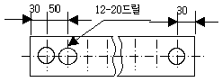
- 전체 길이는 660mm 이다.
- 드릴 가공 구멍의 지름은 12mm이다.
- 드릴 가공 구멍의 수는 12개 이다.
- 드릴 가공 구멍의 피치는 30mm 이다.
(정답률: 61%)
52. 가공 방법의 보조 기호 중에서 연삭에 해당하는 것은?
- C
- G
- F
- M
(정답률: 55%)
53. 배관도에서 유체의 종류와 문자 기호를 나타낸 것 중 틀린 것은?
- 공기 : A
- 연료 가스 : G
- 연료유 또는 냉동기유 : O
- 증기 : W
(정답률: 76%)
54. 보기 입체도의 정면도로 가장 적합한 투상은?
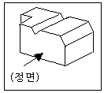
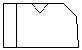
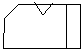
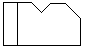
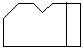
(정답률: 81%)
55. 원호의 반지름이 커서 그 중심 위치를 나타낼 필요가 있을 경우 지면 등의 제약이 있을 때는 그 반지름의 치수선을 구부려서 표시할 수 있다. 이 때 치수선의 표시 방법으로 맞는 것은?
- 치수선에 화살표가 붙은 부분은 정확한 중심 위치를 향하도록 한다.
- 중심점에서 연결된 치수선의 방향은 정확히 화살표로 향한다.
- 치수선의 방향은 중심에 관계없이 보기 좋게 긋는다.
- 중심점의 위치는 원호의 실제 중심 위치에 있어야 한다.
(정답률: 38%)
56. 전개도법의 종류 중 주로 각기둥이나 원기둥의 전개에 가장 많이 이용되는 방법은?
- 삼각형을 이용한 전개도법
- 방사선을 이용한 전개도법
- 평행선을 이용한 전개도법
- 사각형을 이용한 전개도법
(정답률: 77%)
57. 보기와 같이 제3각법으로 정투상도를 작도할 때 누락된 평면도로 적합한 것은?
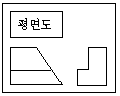
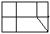
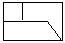
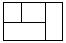
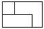
(정답률: 41%)
58. 그림은 투상법의 기호이다. 몇 각법을 나타내는 기호인가?
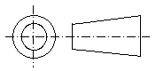
- 제1각법
- 제2각법
- 제3각법
- 제4각법
(정답률: 79%)
59. 치수선, 치수 보조선, 지시선, 회전 단면도선으로 사용되는 선의 종류는?
- 가는 파선
- 가는 1점 쇄선
- 가는 실선
- 가는 2점 쇄선
(정답률: 57%)
60. 제1각법에서 좌측면도는 정면도를 기준으로 어느 쪽에 배치되는가?
- 좌측
- 우측
- 위
- 아래
(정답률: 57%)